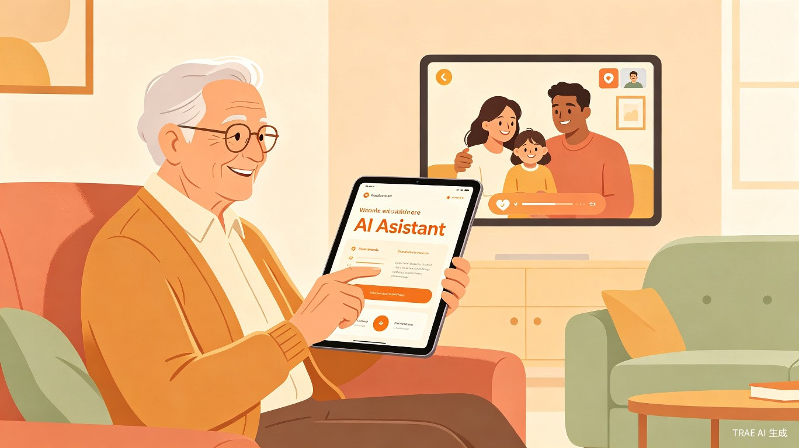
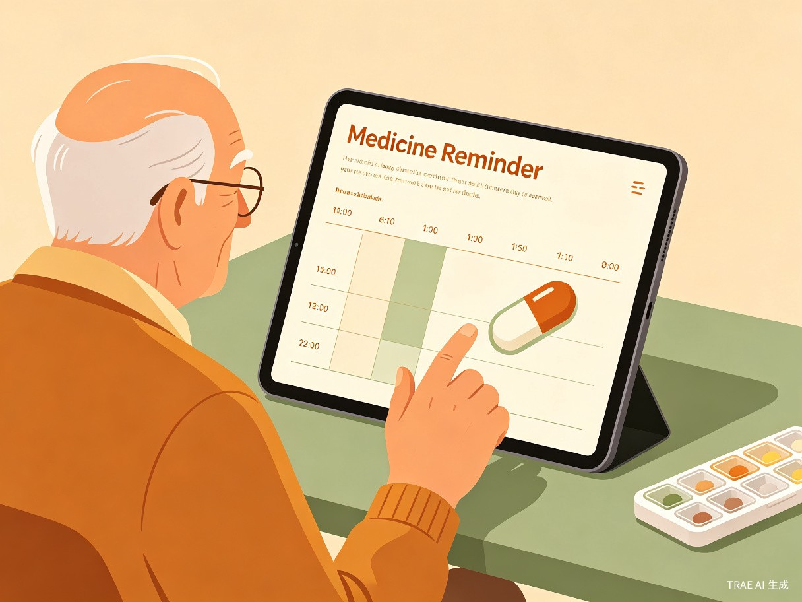
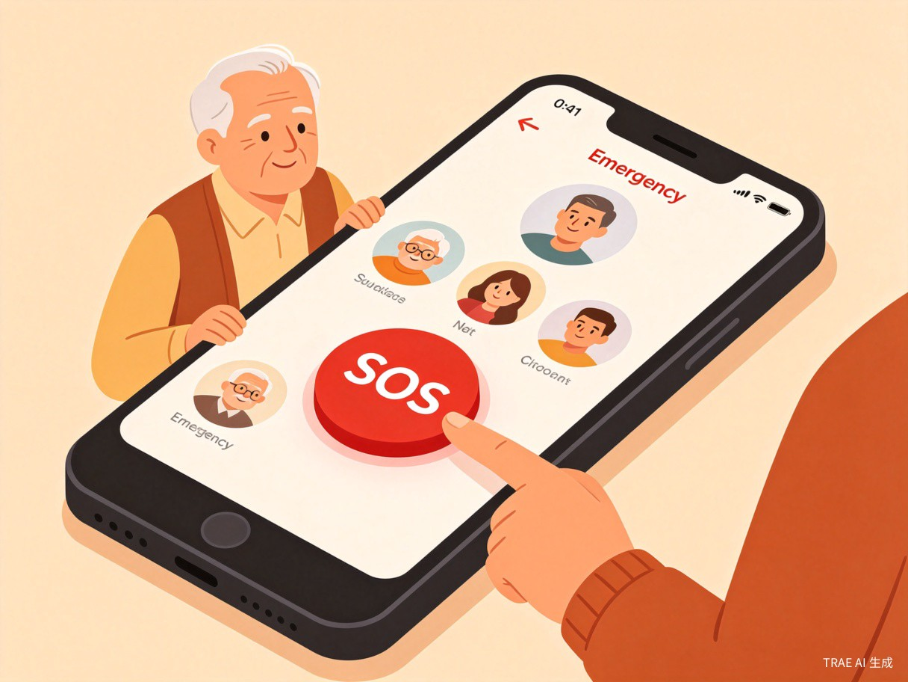
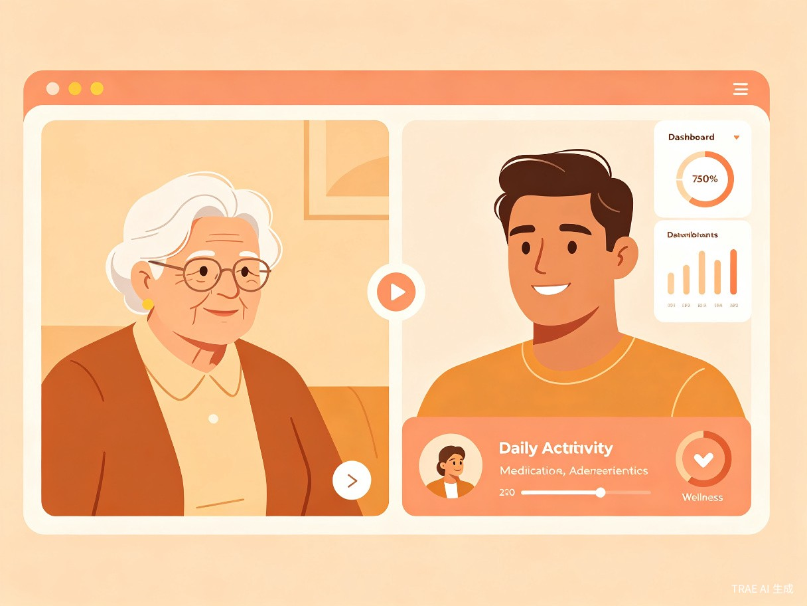

一、创意名称与介绍
创意名称：银发陪伴 — 老年人智能生活助手
产品形态：极简大字版 Web 应用（语音交互为核心）
参赛赛道：社会服务 + 社会公益
想解决什么问题？
随着社会数字化进程加速，老年人正面临严重的「数字鸿沟」。医院挂号要打开多个App、打车需要操作复杂界面、缴费要在各种小程序间切换——这些对年轻人来说轻而易举的操作，对60岁以上的老人来说却如同面对一堵无形的墙。子女不在身边时，老人遇到问题无人求助，生活便利性大打折扣，甚至产生被时代抛弃的孤独感。
为什么会想到做这个？
这个创意来源于真实的家庭体验。我们观察到，问题不在于老人学不会，而在于现有产品的设计没有考虑老年人的需求——字体太小、步骤太多、交互方式不适合老年人。我们希望用 AI 技术弥合这道鸿沟。
大概是什么产品？
一个极简大字版的 Web 应用，核心交互方式为语音输入 + 语音播报。老人不需要打字，对着手机说话就行。界面设计遵循适老化原则：大字体、高对比度、少步骤、大按钮。同时提供子女端，让子女可以远程查看父母使用情况、设置提醒、管理联系人。
二、目标用户及痛点
核心用户
主要用户：60岁以上、智能手机使用能力有限的老年人。他们可能视力下降、不熟悉触屏操作、对新技术有畏难情绪，但仍然有独立生活的意愿和需求。
次要用户：在外工作、无法时刻陪伴父母的子女（30-50岁）。他们关心父母的日常生活，希望能远程了解父母状况，但缺乏有效的远程关怀工具。
使用场景
| 场景 | 用户行为 | 当前困难 |
|---|---|---|
| 独自在家需要看病 | 老人想预约医院挂号 | 找不到挂号入口，不会选择科室和时间 |
| 日常用药管理 | 老人需要按时服药 | 忘记吃药、记错剂量、无人提醒 |
| 想联系家人 | 老人想和子女视频通话 | 不会发起视频、找不到联系人 |
| 紧急情况 | 老人身体不适需要求助 | 慌乱中找不到电话、不知道该联系谁 |
| 出行需求 | 老人需要打车或查公交 | 不会使用打车App，看不清公交信息 |
核心痛点总结
界面复杂
现有App字体小、步骤多、层级深，老人根本不会用
教了就忘
子女远程教操作效率低，反复教反复忘
关爱缺失
子女不在身边，老人遇到紧急情况无人帮助
三、核心功能模块
语音助手
老人只需说"我要挂号"，AI 自动引导完成医院选择、科室、时间预约。全程语音交互，无需打字，像和真人对话一样自然。

吃药提醒
子女远程设置用药计划，到时间语音播报 + 大字弹窗提醒老人服药。支持拍照识别药盒自动录入药品信息。

一键求助
遇到紧急情况，按下醒目的 SOS 大按钮，自动呼叫子女或拨打急救电话。同时发送定位信息，确保第一时间获得帮助。

子女关怀端
子女可远程查看父母日常使用情况、用药记录、活动状态。支持远程设置提醒、管理紧急联系人，让关爱不因距离缺席。
更多功能规划
| 功能模块 | 说明 | 优先级 |
|---|---|---|
| 天气播报 | 每天早上自动语音播报天气，提醒增减衣物 | P1 |
| 视频通话 | 大按钮一键发起与子女的视频通话 | P1 |
| 生活服务 | 叫车、查公交、缴纳水电费等常用操作简化 | P2 |
| 新闻播报 | 每天定时推送精选新闻，语音播报 | P2 |
| 健康记录 | 记录血压、血糖等健康数据，生成趋势报告 | P3 |
四、用户使用流程
老人打开应用
语音说出需求
AI 理解意图
语音引导操作
完成任务
整个流程设计遵循「三步原则」：任何操作不超过三步完成。老人不需要理解复杂的菜单结构，只需要「说」和「听」，AI 负责所有的中间环节。
五、价值与意义
社会价值
帮助老年人跨越数字鸿沟，让科技真正服务于每一个人。响应国家「适老化改造」政策方向，推动数字包容性社会的建设。
效率提升
子女不再需要反复远程教操作，老人也能更独立地完成日常事务。一次设置，长期受益，大幅降低家庭沟通成本。
情感价值
增强老年人与子女之间的连接，让关爱不因距离而缺席。老人获得独立生活的尊严感，子女获得安心与放心。
数据背景：截至2025年，中国60岁以上老年人口已超过3亿，其中仅有不到30%能熟练使用智能手机的基本功能。「银发陪伴」致力于让每一位老人都能平等地享受数字时代的便利。
六、技术实现方案
本项目计划使用 TRAE Work / TRAE IDE 作为核心开发工具，充分利用 AI 辅助编程能力，快速将创意落地为可体验的 Demo。
| 技术模块 | 技术方案 |
|---|---|
| 前端框架 | HTML/CSS/JavaScript，适老化大字版响应式设计 |
| 语音交互 | Web Speech API（语音识别 + 语音合成） |
| AI 对话理解 | 大语言模型 API，理解老人口语化表达，提取意图 |
| 数据存储 | 轻量级本地存储 + 云端同步（用户设置、用药计划等） |
| 开发工具 | TRAE Work（Auto 模式）快速生成，TRAE IDE 精细打磨 |